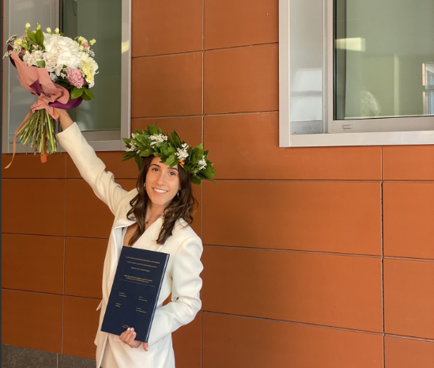
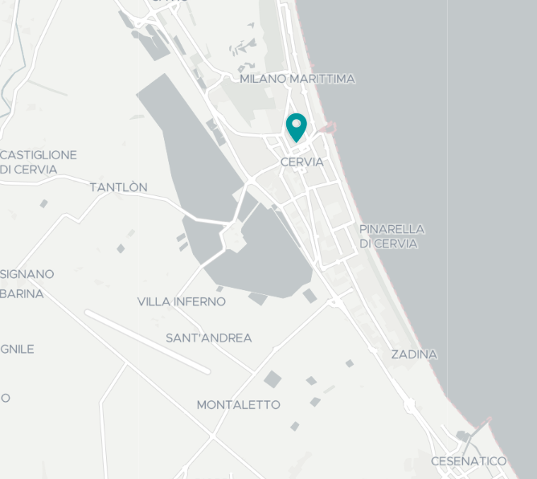
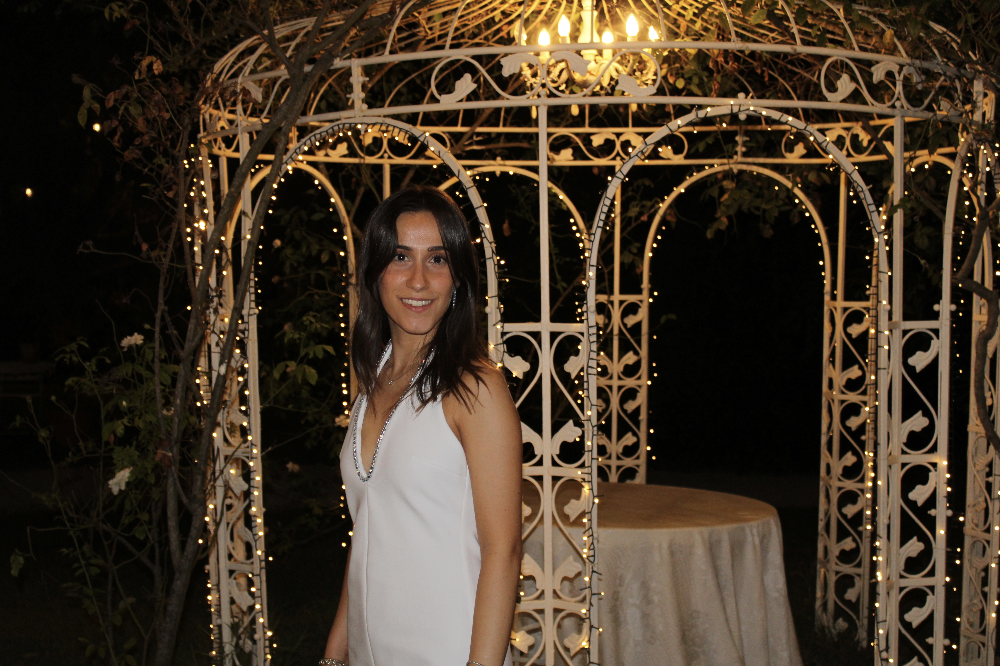
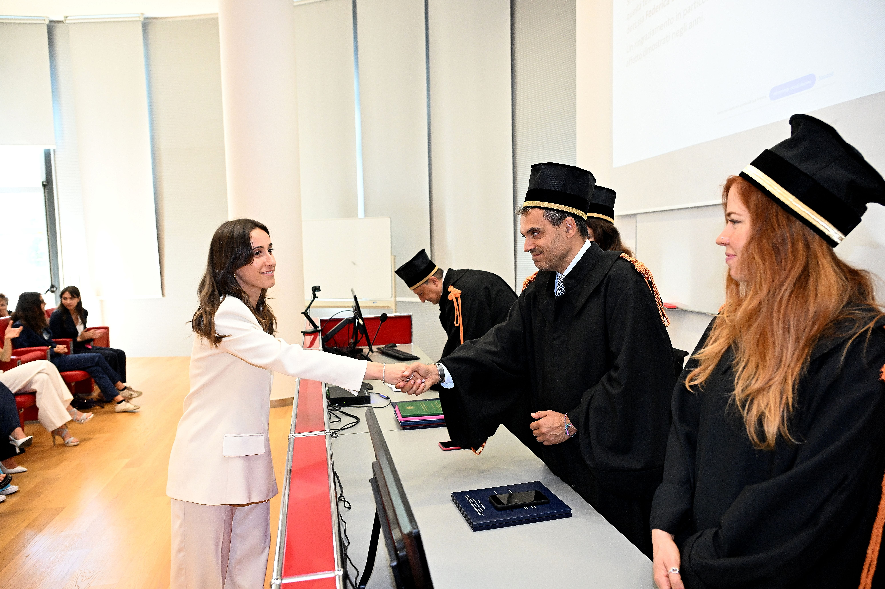

About me
Bioinformatics MSc student at the University of Bologna, with a background in Biotechnology.

Bioinformatics MSc student at the University of Bologna, with a background in Biotechnology.

I'm originally from Cervia, a coastal town in Emilia-Romagna. I value a balanced, outdoor-oriented lifestyle and bring the same energy into my work: curiosity, discipline and long-term focus.

Proactive, positive and goal-oriented, I enjoy science and data-driven thinking—especially when computation helps explain biology and supports real decisions. Born in 2001.
The best way to explore my work is through GitHub. You can also find me on LinkedIn and Instagram.
A couple of personal moments that represent motivation, balance and energy — the human side behind my academic path.

